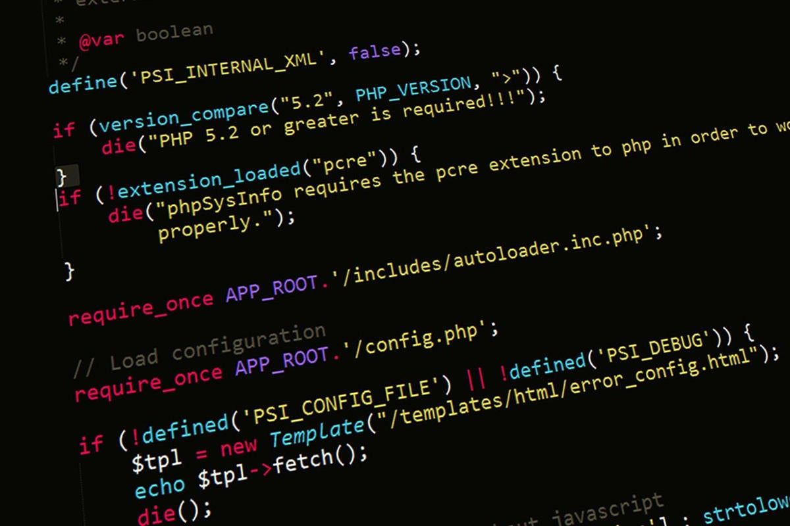
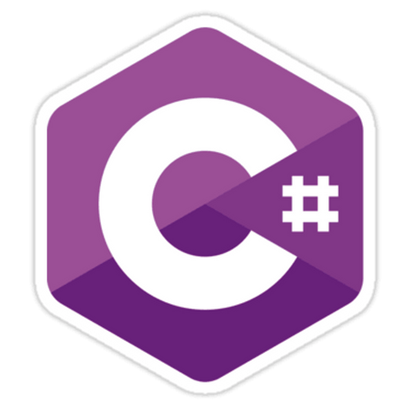

Programlama Dilleri

Programlama dili, yazılımcının bir algoritmayı ifade etmek amacıyla, bir
bilgisayara ne yapmasını istediğini anlatmasının tektipleştirilmiş
yoludur. Programlama dilleri, yazılımcının bilgisayara hangi veri
üzerinde işlem yapacağını, verinin nasıl depolanıp iletileceğini, hangi
koşullarda hangi işlemlerin yapılacağını tam olarak anlatmasını sağlar.
Şu ana kadar 250'den fazla programlama dili geliştirilmiştir
C

AT&T Bell laboratuvarlarında, Ken Thompson ve Dennis Ritchie tarafından UNIX İşletim Sistemi' ni geliştirebilmek amacıyla B dilinden türetilmiş yapısal bir programlama dilidir. Geliştirilme tarihi 1972 olmasına rağmen yayılıp yaygınlaşması Brian Kernighan ve Dennis M. Ritchie tarafından yayımlanan "C Programlama Dili" kitabından sonra hızlanmıştır. Günümüzde neredeyse tüm işletim sistemlerinin (Microsoft Windows, GNU/Linux, *BSD, Minix) yapımında %95' lere varan oranda kullanılmış, hâlen daha sistem, sürücü yazılımı, işletim sistemi modülleri ve hız gereken her yerde kullanılan oldukça yaygın ve sınırları belirsiz oldukça keskin bir dildir. Keskinliği, programcıya sonsuz özgürlüğün yanında çok büyük hatalar yapabilme olanağı sağlamasıdır. Programlamanın gelişim süreciyle beraber programlamanın karmaşıklaşması, gereksinimlerin artması ile uygulama programlarında nesne yönelimliliğin ortaya çıkmasından sonra C programcıları büyük ölçüde nesne yönelimliliği destekleyen C++ diline geçmişlerdir.
C++

C++ (Türkçe okunuşu: ce artı artı, İngilizce okunuşu: si plas plas),
Bell Laboratuvarlarından Bjarne Stroustrup tarafından 1979 yılından
itibaren geliştirilmeye başlanmış, C'yi kapsayan ve çok paradigmalı,
yaygın olarak kullanılan, genel amaçlı bir programlama dilidir. İlk
olarak C With Classes (Sınıflarla C) olarak adlandırılmış, 1983 yılında
ismi C++ olarak değiştirilmiştir.
Genel olarak her C programı aynı zamanda bir C++ programıdır, ancak her
C++ programı bir C programı değildir. Bu durumun bazı istisnaları
mevcuttur. C++'ı C'den ayıran özellikler C++'ın nesne paradigması
kullanılarak programlamaya olanak tanıyan özelliklerdir. Sınıflar
sayesinde yeni veri türleri yaratılabilir veya varolan türlerden
yenileri türetilebilir. Ayrıca çokbiçimlilik sayesinde bir sınıf
tanımıyla yazılmış kod, o sınıf türünden türetilmiş yeni sınıflarla da
çalışabilir.
C#

C#; Microsoft tarafından .NET Teknolojisi için geliştirilen modern bir
programlama dilidir. Sözdizimi C-like (C benzeri) bir deneyim sunar.
Microsoft tarafından geliştirilmiş olsa da ECMA ve ISO standartları
altına alınmıştır.
C programlama dilinde bir tam sayı değişkeni 1 artırmak için değişkenden
sonra "++" eki kullanılır. C++ dilinin adı, C diliyle Nesne Yönelimli
Programlama yapabilme olanağı (C with Classes) için eklentiler sağladığı
için "C++" şeklindedir. Benzer şekilde C++ diline yeni eklentiler
yapılarak ((C++)++) bir adım daha da ileriye götürülmüş ve tamamen
nesneye yönelik tasarlanmış C# dilinin isimlendirilmesinde, +
karakterlerinin birbirlerine yakınlaşmış hali ve bir melodi anahtarı
olan C# Major kullanılmıştır.
Bu dilin tasarlanmasına Pascal, Delphi derleyicileri ve J++ programlama
dilinin tasarımlarıyla bilinen Anders Hejlsberg liderlik etmiştir.
Birçok alanda Java'yı kendisine örnek alır ve C# da java gibi C ve C++
kod sözdizimine benzer bir kod yapısındadır. .NET kütüphanelerini
kullanmak amacıyla yazılan programların çalıştığı bilgisayarlarda uyumlu
bir kütüphanenin ve yorumlayıcının bulunması gereklidir. Bu,
Microsoft'un .NET Framework'u olabileceği gibi ECMA standartlarına uygun
herhangi bir kütüphane ve yorumlayıcı da olabilir. Yaygın diğer
kütüphanelere örnek olarak Portable.Net ve Mono verilebilir.
[kaynak belirtilmeli] Nesne yönelimli programlama kavramının
gelişmesine katkıda bulunan aktif programlama dillerinden biridir.
C#, .NET orta seviyeli programlama dillerindendir. Yani hem makine
diline hem de insan algısına eşit seviyededir. Buradaki orta ifadesi
dilin gücünü değil makine dili ile günlük konuşma diline olan mesafesini
göstermektedir. Örneğin; Visual Basic .NET (VB.NET) yüksek seviyeli bir
dildir dersek bu, dilin insanların günlük yaşantılarında konuşma
biçimine yakın şekilde yazıldığını ifade etmektedir. Dolayısıyla VB.NET,
C#.NET'ten daha güçlü bir dildir diyemeyiz.
Programın çalışması istenen bilgisayarlarda framework kurulu olması
gerekmektedir. (Windows 7 ve Windows Vista'da .NET Framework kuruludur)
SWİFT

Swift, Apple tarafından iOS ve macOS platformlarına iOS ve Mac
uygulamaları geliştirmek için oluşturulan, derlenerek çalışan güçlü ve
kullanımı kolay, nesne yönelimli bir programlama dili.
İlk olarak WWDC 2014 konferansında duyrulmuştur. Swift Apple'ın Cocoa ve
Cocoa Touch geliştirme çatıları ve Objective-C ile yazılmış çoğu Apple
ürünüyle beraber çalışabilecek şekilde tasarlanmıştır.
Swift, TIOBE25 Şubat 2018 tarihinde Wayback Machine sitesinde
arşivlendi. indeksinin Mart 2017 verilerine göre dünyada en çok
kullanılan 10 programlama dilinden birisi haline gelmiştir. Mevcut
Objective-C koduna sorunsuz entegre edilebilmesi sayesinde, yazılım
geliştiriciler için zamandan tasarruf sağlamaktadır.
Swift programlama dilinde programlama geliştirmek için Xcode programı
kullanılır.
GO

Go (diğer adıyla golang), Google'da 2007 yılından itibaren geliştirilmeye başlayan açık kaynak programlama dilidir.[4] Daha çok sistem programlama için tasarlanmış olup, derlenmiş ve statik tipli bir dildir. Kasım 2009'da çıkmıştır. Go derleyicisi "gc", açık kaynak yazılım olarak, Linux, OS X, Windows, bazı BSD ve Unix versiyonları, ve ayrıca 2015'ten itibaren akıllı telefonlar için geliştirilmiştir.